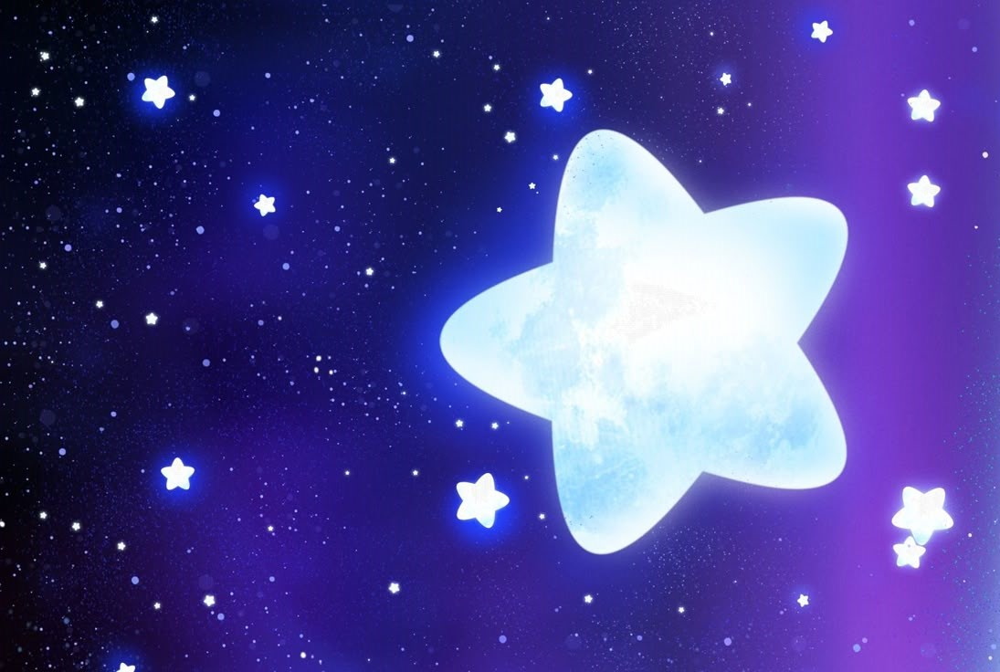
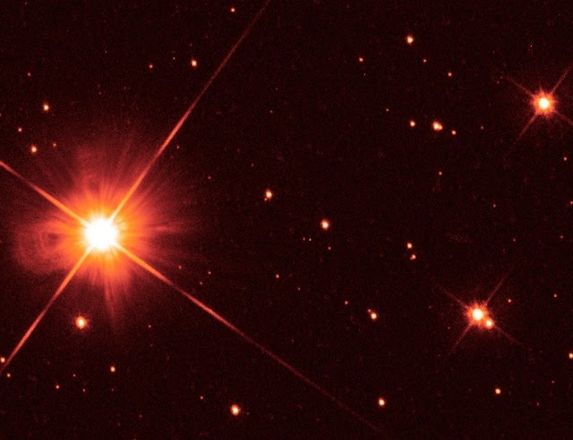
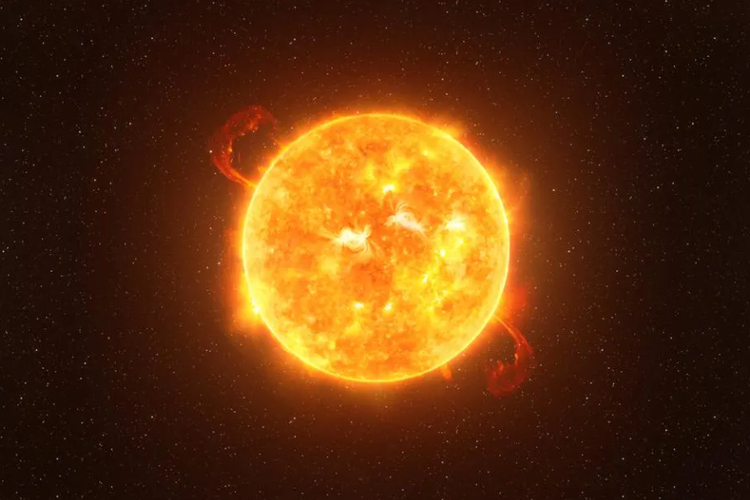
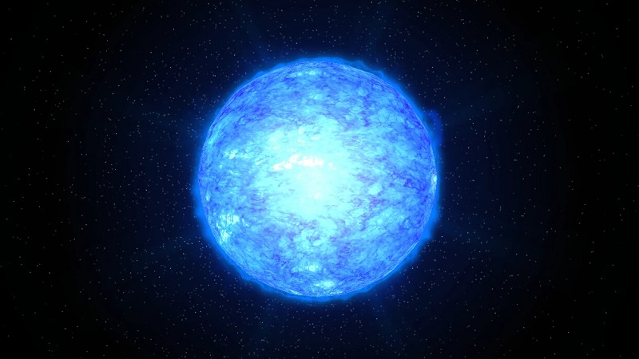
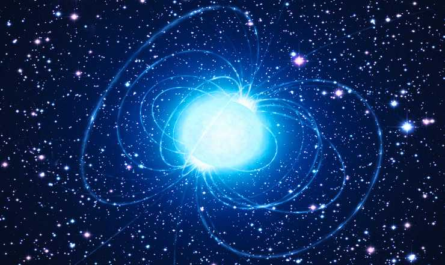
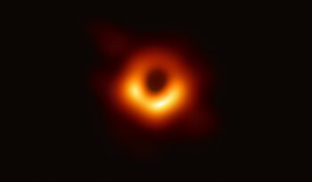
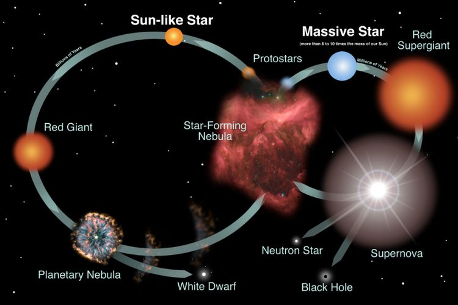
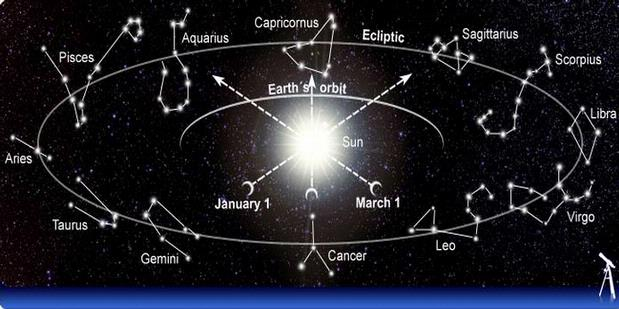

Apa Itu Bintang dan Ragamnya?

Bintang adalah bola gas raksasa yang memancarkan cahaya dan energi akibat reaksi fusi nuklir di intinya.
Proses ini mengubah hidrogen menjadi helium, melepaskan energi dalam bentuk cahaya dan panas yang menyinari
tata surya dan sekitarnya. Bintang tersebar di seluruh alam semesta dengan berbagai ukuran, warna, dan suhu.
Berdasarkan klasifikasinya, bintang dapat dibagi menjadi beberapa jenis:
1. Bintang Katai (Dwarf Stars)

Termasuk bintang kecil hingga sedang seperti Matahari. Bintang katai merah adalah yang paling umum dan
memiliki umur yang sangat panjang.
2. Bintang Raksasa (Giant Stars)

Jauh lebih besar dari Matahari, seperti Betelgeuse, yang memiliki diameter ratusan kali lebih besar
dari Matahari.
3. Bintang Super Raksasa (Supergiant Stars)

Termasuk bintang terbesar di alam semesta, seperti Rigel, yang sangat terang dan berumur pendek dibanding
bintang lain.
4. Bintang Neutron

Sisa ledakan supernova dari bintang besar, sangat padat dengan gravitasi ekstrem.
5. Lubang Hitam

Terbentuk dari runtuhnya bintang bermassa besar, memiliki gravitasi begitu kuat sehingga bahkan cahaya
tidak bisa melarikan diri darinya.
Siklus Hidup Bintang

Bintang mengalami siklus hidup yang panjang, dimulai dari kelahirannya di dalam nebula, yaitu awan gas
dan debu yang mengalami kontraksi akibat gravitasi hingga membentuk protobintang. Setelah mencapai suhu
dan tekanan yang cukup tinggi, protobintang mulai melakukan reaksi fusi nuklir, yang menandai masuknya ke
fase deret utama, seperti yang terjadi pada Matahari saat ini. Dalam fase ini, bintang berada dalam kondisi
stabil dan membakar bahan bakarnya selama miliaran tahun. Ketika bahan bakar hidrogen mulai habis, nasib
akhir bintang bergantung pada massanya.
Bintang bermassa rendah hingga sedang, seperti Matahari, akan berkembang menjadi bintang raksasa merah,
kemudian kehilangan lapisan luarnya dan menyisakan bintang katai putih yang perlahan mendingin hingga menjadi
bintang katai hitam. Sementara itu, bintang bermassa besar akan mengalami ledakan supernova, melepaskan elemen-elemen
berat ke luar angkasa, dan menyisakan bintang neutron atau bahkan lubang hitam jika massanya sangat besar. Siklus
ini terus berlangsung, membantu membentuk unsur-unsur yang diperlukan bagi kehidupan dan perkembangan galaksi.
Peran Penting Bintang

Bintang memiliki peran penting dalam alam semesta karena mereka berkontribusi pada berbagai aspek
kehidupan dan struktur kosmik:
1. Sumber Energi dan Kehidupan
Bintang seperti Matahari adalah sumber energi utama bagi planet-planet di sekitarnya.
Tanpa panas dan cahaya dari Matahari, kehidupan di Bumi tidak akan mungkin ada.
2. Pembentuk Unsur-Unsur Kimia
Melalui fusi nuklir, bintang menghasilkan elemen-elemen seperti karbon, oksigen,
dan besi. Ketika bintang besar meledak dalam supernova, unsur-unsur ini tersebar
ke seluruh galaksi dan menjadi bahan pembentuk planet serta makhluk hidup.
3. Navigasi dan Penanda Waktu
Sejak zaman kuno, manusia telah menggunakan bintang untuk menentukan arah, seperti
Polaris (Bintang Utara) yang membantu navigasi laut. Selain itu, bintang digunakan
untuk membuat kalender dan mengukur waktu dalam berbagai budaya.
4. Evolusi Galaksi dan Tata Surya
Bintang membantu membentuk tata surya dan memengaruhi perkembangan galaksi. Ketika
bintang mati, materialnya bisa menjadi bagian dari bintang baru, planet, atau bahkan
kehidupan di masa depan.